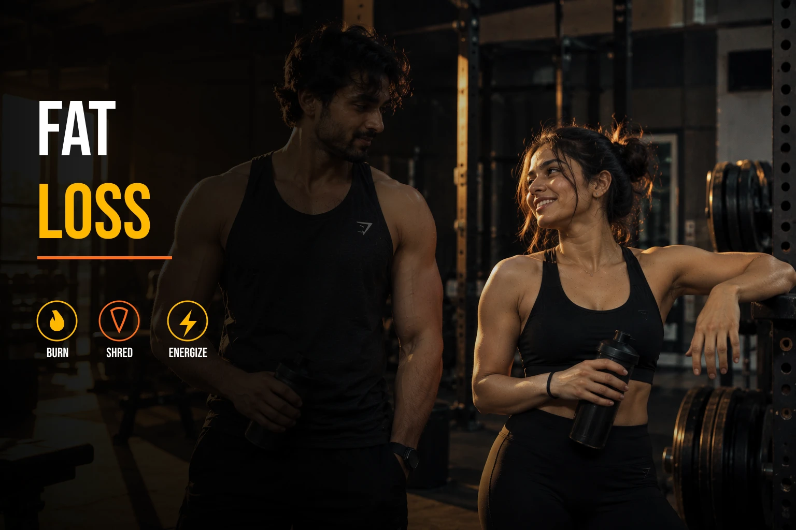
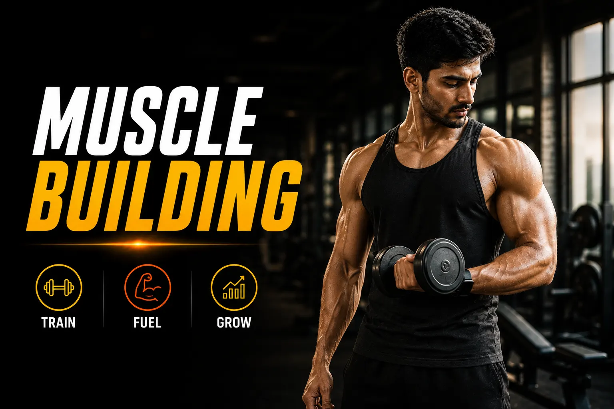

TRANSFORM YOUR
HUMAN HARDWARE
Elite coaching by Aman Khurana - precise nutrition, science-backed training, real transformations.
THE RESULTS


WHAT CLIENTS SAY
These are 100% real reviews from real clients — nothing here is fake. Feel free to cross-check on Google Reviews.
“I have been training under Aman sir for the past two months and it has been an incredible experience. He not only provides personalized diet plans and exercise routines but also guides me patiently and ensures I understand each step.”
“I’ve been under training with Coach Aman Khurana sir since 2023 to till date, and I’ve seen significant improvements in my fitness level & my lifestyle too. Expertise in resistance training and tailored workout plans have really helped me target my goals effectively. The sessions are always well-structured and challenging, but also enjoyable. What I appreciate most is his personalized approach and the way he provides clear guidance on technique. I’ve noticed better strength and endurance in just a few weeks, which has been amazing. I highly recommend Coach Aman Khurana to anyone looking for a dedicated, knowledgeable coach.”
“As per my experience with Aman Sir and other trainers, I have no hesitation in saying that now I cannot imagine another trainer for a workout. From nutrition to the execution of our workouts, Aman Sir guides us in every training step. I can definitely say that he is India’s best trainer.”
“I have been training under you for the past two months, and the transformation has been nothing short of incredible. My body shape has changed drastically, and my energy levels have never been this high.”
“One of the best! I have been training under Aman bhai for the past 4 years. Looking forward for many more years and achieve the supremo.”
“Aman was incredibly motivating, pushing me to challenge myself while still making me feel comfortable and supported. He kept me on track and helped me stay positive even when I felt like giving up. I’ve seen significant improvements in my strength and endurance since starting with Aman. I feel more confident and energetic now. Keep up the good work Aman!”
“Inspite of many challenges due to my age (45+), cervical spondylitis, low vitamin D and impatience, my trainer Mr. Aman put in a lot of effort to bring my body in shape. I decreased 5 kg in a few months and delicately followed his advice & diet schedule. He is really a very professional trainer & always makes his clients comfortable.”
“The coach who doesn’t just train bodies, but builds confidence.”
“I highly recommend Aman Khurana for anyone serious about achieving their fitness goals. As a certified personal trainer, nutritionist, and lifestyle & bodybuilding prep coach with over 15 years of experience, he truly delivers results. What stood out most was how personalized and sustainable his guidance felt — he takes the time to understand your specific goals and creates tailored training and nutrition plans that actually work in real life. No generic one-size-fits-all programs. His knowledge of form, progressive overload, recovery, and evidence-based nutrition makes a huge difference, and he explains everything clearly. Whether you’re training in person or online from anywhere, his coaching leaves no stone unturned. If you’re looking for genuine expertise, accountability, and lasting results rather than quick-fix gimmicks, Aman is the real deal.”
“When I first started training under the guidance of Aman sir I hadn’t a clue how to exercise properly & what’s right or wrong for me to eat such as importance of proteins, hydration etc. But with his help I was able to quickly improve my lifestyle week by week. I looked forward to my every next session with more focus because he has the ability to even make exercising exciting. I would highly recommend hiring Aman sir to anyone looking for a highly qualified health coach. He showed me that a healthy lifestyle can be interesting and fun.”
“Sir aapki guidance ki wajah se maine apni life mein ek healthy lifestyle phir se shuru kiya hai. Pehle bhi aapki wajah se maine apni health ko improve kiya tha. Last time I lost around 30 kgs in 2.5 years with your guidance, and now I am following the diet plan and exercise with consistency. I am feeling my energy is at a good level and my fitness is also improving day by day. This is all only because of you sir. Your knowledge about diet and exercise regime is excellent. Thank you sir for being my guide in the healthy journey of my life.”
“He is a great guy and very polite, always keeps on encouraging you. He believes in positive reinforcement to bring a change in you and has very good knowledge about the subject, trying every day to improve it to benefit others. Sessions with him were very interesting and informative — he tries to improve your overall health and wellness rather than giving some exercises, starting from posture to nutrition. Under his coaching I have seen people from all age groups, from children to elderly, working out under him. Even after leaving Chandigarh I am still in contact with him through his online coaching. He also helped my wife during her pregnancy to improve her strength and stamina, which helped her a lot during her antenatal and postnatal period.”
“I have been training under Aman sir for the past two months and it has been an incredible experience. He not only provides personalized diet plans and exercise routines but also guides me patiently and ensures I understand each step.”
“I’ve been under training with Coach Aman Khurana sir since 2023 to till date, and I’ve seen significant improvements in my fitness level & my lifestyle too. Expertise in resistance training and tailored workout plans have really helped me target my goals effectively. The sessions are always well-structured and challenging, but also enjoyable. What I appreciate most is his personalized approach and the way he provides clear guidance on technique. I’ve noticed better strength and endurance in just a few weeks, which has been amazing. I highly recommend Coach Aman Khurana to anyone looking for a dedicated, knowledgeable coach.”
“As per my experience with Aman Sir and other trainers, I have no hesitation in saying that now I cannot imagine another trainer for a workout. From nutrition to the execution of our workouts, Aman Sir guides us in every training step. I can definitely say that he is India’s best trainer.”
“I have been training under you for the past two months, and the transformation has been nothing short of incredible. My body shape has changed drastically, and my energy levels have never been this high.”
“One of the best! I have been training under Aman bhai for the past 4 years. Looking forward for many more years and achieve the supremo.”
“Aman was incredibly motivating, pushing me to challenge myself while still making me feel comfortable and supported. He kept me on track and helped me stay positive even when I felt like giving up. I’ve seen significant improvements in my strength and endurance since starting with Aman. I feel more confident and energetic now. Keep up the good work Aman!”
“Inspite of many challenges due to my age (45+), cervical spondylitis, low vitamin D and impatience, my trainer Mr. Aman put in a lot of effort to bring my body in shape. I decreased 5 kg in a few months and delicately followed his advice & diet schedule. He is really a very professional trainer & always makes his clients comfortable.”
“The coach who doesn’t just train bodies, but builds confidence.”
“I highly recommend Aman Khurana for anyone serious about achieving their fitness goals. As a certified personal trainer, nutritionist, and lifestyle & bodybuilding prep coach with over 15 years of experience, he truly delivers results. What stood out most was how personalized and sustainable his guidance felt — he takes the time to understand your specific goals and creates tailored training and nutrition plans that actually work in real life. No generic one-size-fits-all programs. His knowledge of form, progressive overload, recovery, and evidence-based nutrition makes a huge difference, and he explains everything clearly. Whether you’re training in person or online from anywhere, his coaching leaves no stone unturned. If you’re looking for genuine expertise, accountability, and lasting results rather than quick-fix gimmicks, Aman is the real deal.”
“When I first started training under the guidance of Aman sir I hadn’t a clue how to exercise properly & what’s right or wrong for me to eat such as importance of proteins, hydration etc. But with his help I was able to quickly improve my lifestyle week by week. I looked forward to my every next session with more focus because he has the ability to even make exercising exciting. I would highly recommend hiring Aman sir to anyone looking for a highly qualified health coach. He showed me that a healthy lifestyle can be interesting and fun.”
“Sir aapki guidance ki wajah se maine apni life mein ek healthy lifestyle phir se shuru kiya hai. Pehle bhi aapki wajah se maine apni health ko improve kiya tha. Last time I lost around 30 kgs in 2.5 years with your guidance, and now I am following the diet plan and exercise with consistency. I am feeling my energy is at a good level and my fitness is also improving day by day. This is all only because of you sir. Your knowledge about diet and exercise regime is excellent. Thank you sir for being my guide in the healthy journey of my life.”
“He is a great guy and very polite, always keeps on encouraging you. He believes in positive reinforcement to bring a change in you and has very good knowledge about the subject, trying every day to improve it to benefit others. Sessions with him were very interesting and informative — he tries to improve your overall health and wellness rather than giving some exercises, starting from posture to nutrition. Under his coaching I have seen people from all age groups, from children to elderly, working out under him. Even after leaving Chandigarh I am still in contact with him through his online coaching. He also helped my wife during her pregnancy to improve her strength and stamina, which helped her a lot during her antenatal and postnatal period.”





FITNESS CALCULATORS
KCAL / DAY (MAINTENANCE ESTIMATE)